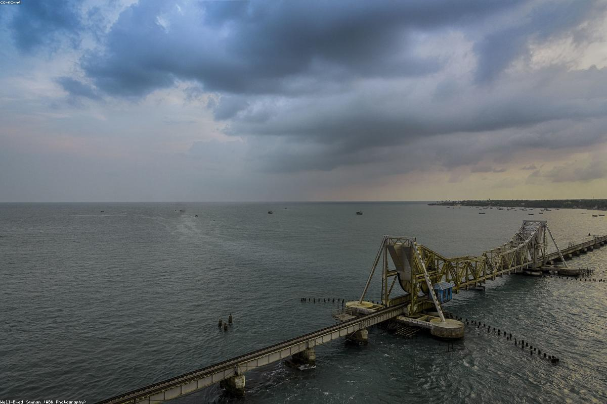

Tamil Nadu
Rameshwaram, situated on Pamban Island off the coast of Tamil Nadu, is one of the holiest places in India and part of the Char Dham pilgrimage. Connected to the mainland by the iconic Pamban Bridge, it is historically and mythologically significant as the place from where Lord Rama built a bridge to Lanka. The town is centered around the Ramanathaswamy Temple, famous for its grand corridors with intricately carved pillars—the largest in the world. From the pristine beaches of Dhanushkodi to the sacred wells within the temple, Rameshwaram is a place where faith and natural beauty are seamlessly entwined.
Rameshwaram is an island city located in the Ramanathapuram district of Tamil Nadu.
The best time to visit is from October to April. The weather is cool and ideal for beach exploration and temple visits.
By Air: Madurai International Airport (approx. 175 km) is the nearest airport.
By Train: Rameshwaram Railway Station (RMM) is well-connected to major cities like Chennai and Madurai.
By Road: Connected by a road bridge (Annai Indira Gandhi Bridge) to the mainland; regular buses run from all parts of South India.
- Wear comfortable cotton clothes and be prepared for humidity.
- If visiting the temple for puja, check the specific timings and dress codes in advance.
- Carry drinking water and sunscreen when visiting Dhanushkodi as it is an open area with little shade.
- Do not miss the local South Indian thali and fresh seafood in the town's small hotels.